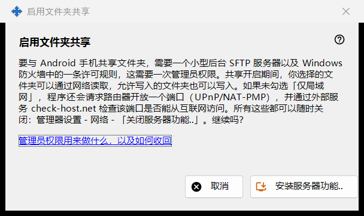
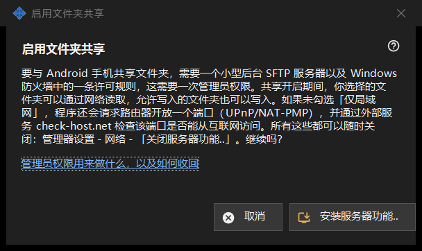

启用文件夹共享
用途说明
请求安装共享的服务器部分：一个在后台运行的小型 SFTP 服务器和一条 Windows 防火墙例外。它从主窗口的「启用服务器功能..」按钮和各个向导中打开，需要一次管理员权限。


操作顺序
- 阅读说明。
- 点击「安装服务器功能..」。
- 确认 Windows 的管理员权限提示。
- 等待结果行；成功时窗口会提示文件夹共享已启用。
- 点击「取消」可不作更改地退出。
界面元素
它做什么
与 Android 手机共享文件夹，需要一个在后台运行的小型 SFTP 服务器和一项 Windows 防火墙许可。共享开启期间，所选文件夹可以通过网络读取，开放写入的文件夹也可以被写入。除非勾选了仅限本地网络的选项，程序还会请求路由器开放一个端口（UPnP/NAT-PMP），并通过外部服务检查地址。
结果
「完成。文件夹共享已启用。」；提示被拒绝时显示「共享未启用 - 未授予管理员权限。」（不会有任何改变，可以重试）；或者出现防火墙失败，此时会要求重试，并发送日志：管理器设置 - 帮助 - 「导出日志以供分析」。
管理员权限及如何收回
该链接说明这些权限的用途。要撤销，请在管理器设置中使用「关闭服务器功能..」：共享停止，已连接的手机被断开，防火墙许可被移除。文件夹列表和密码会保留，所有功能都可以重新开启。